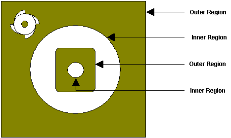
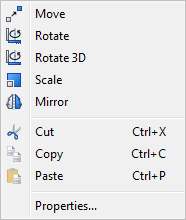

Machining Regions also referred to as Control Geometry are curves or surface boundary edges that already exist in your model or separate new curves you create that coexist within your part. Be sure to read the Important Notes below before proceeding.
|
|
|||||||||||||||||||||||||||||||||||
To create regions, make sure the ribbon bar containing the CAD tools is visible. Select Appearance > Toolbars > Command Bar from the main menu to display the ribbon bar. You will be able to create rectangular, circular and polygonal regions using the tools under the ribbon toolbar. Regions can also be extracted from the 3D model using the tools available under Curves tab in the ribbon bar. |
Multiple and nested regions can be selected, but not regions that intersect. Nested regions are handled according to the following rule: The tool will remain inside an outer region and outside an inner region. A region within an inner region is considered to be an outer region. In the following picture, the shaded areas are where the tool motions occur:  Multiple Regions |
Regions can be deleted by selecting them graphically in the display window or by using the Selections pane from the Modeling Aids Ribbon Bar.
To delete the graphically selected regions, select the right mouse button inside the display window. This will bring up the following pop-up menu. Choose Cut to delete the selected regions. You can also hit the Delete key on the keyboard to delete the active selections.  Right-click Meu for Geometry Regions |
Also the regions can be edited using any of the commands like Move, Rotate, Scale and Mirror. The transformation can also be accessed from the menu bar. The properties of the regions like layer, color can also be edited using the Properties option (Edit > Properties). |